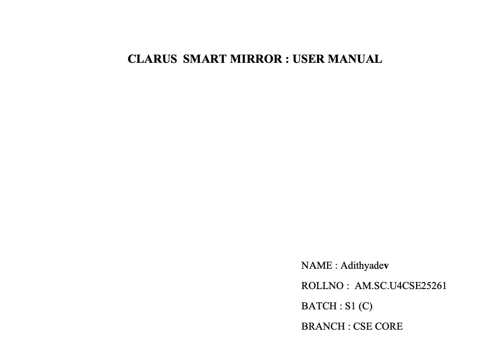
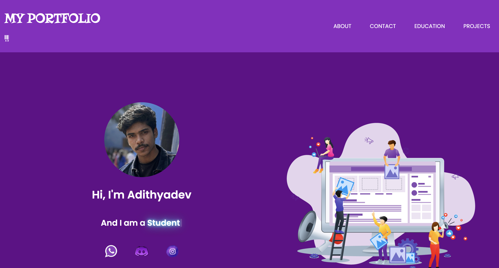

Prepared a user manual for the Clarus Smart Mirror as part of a first-year Technical Communication project. Focused on clear technical writing, structured documentation, and effective presentation of product features and usage.

Designed and developed a responsive portfolio website using HTML and CSS to showcase my skills and learning progress.
